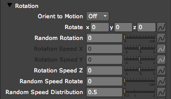
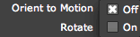

Particle tab> Rotation group
The Rotation group sets the rotation of particles. Particular lets you rotate particles along the X, Y, and Z axes separately for more flexible animation. You can even give the particles a random rotation so they rotate in different directions.
NOTE: Sprite particles can rotate around the Z axis. Textured Polygon particles can orient their X, Y, and Z rotation values automatically to the direction of motion. Textured Polygon particles can also be manipulated on all three axes (X,Y,Z) at once.

Orient to Motion
Orient to Motion lets the particles orient to the direction they are moving. For example, an arrow can point in the direction it moves. By default, this setting is turned Off. Turn it on with the On option.

Two Orient to Motion options.
Rotate x, y, z
These three controls set the rotation of the particles around the X, Y and Z axes.
• Rotation X sets the rotation around the X axis. This control is only enabled for the Particle Type Textured Polygon.
• Rotation Y sets the rotation around the Y axis. This control is only enabled for Textured Polygon.
• Rotation Z sets the rotation around the Z axis. Enabled for the Particle Types Textured Polygon, Sprite and Star.
Random Rotation
This control adds randomness to the available Rotation setting. More specifically, this control rotates the particle around all three axes by a random value. This is useful for getting a more natural looking effect where all particles have unique orientation in 3D space.
Rotation Speed X, Y, Z
These three controls set the particle's Rotation Speed separately on each axis.
• Rotation Speed X sets the speed of rotation around the X axis in degrees per second. This control is only enabled for Textured Polygon.
• Rotation Speed Y sets the speed of rotation around the Y axis. This control is only enabled for Textured Polygon.
• Rotation Speed Z sets the speed of rotation around the Z axis. This control is enabled for Textured Polygon, Sprite and Star.
Random Speed Rotate
The Random Speed Rotate makes the particles rotate at different random speeds. Some of them will rotate quickly while others rotate slowly. If you want the textured polygon to appear to tumble, this control is the one to set. Adding a small value to this control is very useful when giving a natural appearance to particles that are exploding from an area.
Random Speed Distribution
Adds fine-tuning to the randomness of the rotation Rotation Speed. The default value of 0.5 means that random rotation values are set based on a bell curve, where most values are in the center with few values set at low or high values. Setting the value to 1 will set an even distribution causing all particles to get the same degree of random rotation.